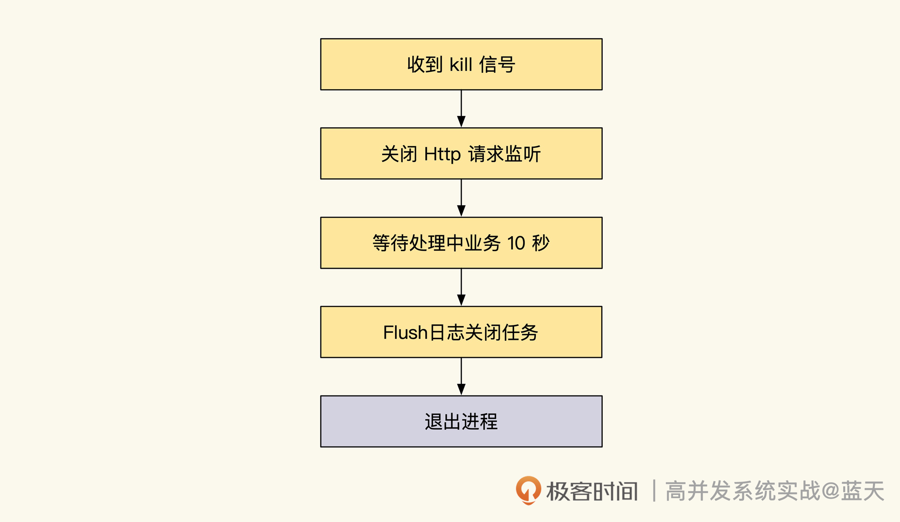

- 00 开篇词 高并发系统，技术实力的试金石.md.html
- 01 结构梳理：大并发下，你的数据库表可能成为性能隐患.md.html
- 02 缓存一致：读多写少时，如何解决数据更新缓存不同步？.md.html
- 03 Token：如何降低用户身份鉴权的流量压力？.md.html
- 04 同城双活：如何实现机房之间的数据同步？.md.html
- 05 共识Raft：如何保证多机房数据的一致性？.md.html
- 06 领域拆分：如何合理地拆分系统？.md.html
- 07 强一致锁：如何解决高并发下的库存争抢问题？.md.html
- 08 系统隔离：如何应对高并发流量冲击？.md.html
- 09 分布式事务：多服务的2PC、TCC都是怎么实现的？.md.html
- 10 稀疏索引：为什么高并发写不推荐关系数据库？.md.html
- 11 链路追踪：如何定制一个分布式链路跟踪系统 ？.md.html
- 12 引擎分片：Elasticsearch如何实现大数据检索？.md.html
- 13 实时统计：链路跟踪实时计算中的实用算法.md.html
- 14 跳数索引：后起新秀ClickHouse.md.html
- 15 实践方案：如何用C++自实现链路跟踪？.md.html
- 16 本地缓存：用本地缓存做服务会遇到哪些坑？.md.html
- 17 业务脚本：为什么说可编程订阅式缓存服务更有用？.md.html
- 18 流量拆分：如何通过架构设计缓解流量压力？.md.html
- 19 流量调度：DNS、全站加速及机房负载均衡.md.html
- 20 数据引擎：统一缓存数据平台.md.html
- 21 业务缓存：元数据服务如何实现？.md.html
- 22 存储成本：如何推算日志中心的实现成本？.md.html
- 23 网关编程：如何通过用户网关和缓存降低研发成本？.md.html
- 24 性能压测：压测不完善，效果减一半.md.html
- 答疑课堂 思考题答案（一）.md.html
- 结束语 为者常成，行者常至.md.html
- 捐赠
23 网关编程：如何通过用户网关和缓存降低研发成本？
你好，我是徐长龙。
如果说用户的流量就像波涛汹涌的海浪，那网关就是防御冲击的堤坝。在大型的互联网项目里，网关必不可少，是我们目前最好用的防御手段。通过网关，我们能把大量的流量分流到各个服务上，如果配合使用Lua脚本引擎提供的一些能力，还能大大降低系统的耦合度和性能损耗，节约我们的成本。
一般来说，网关分为外网网关和内网网关。外网网关主要负责做限流、入侵预防、请求转发等工作，常见方式是使用Nginx + Lua做类似的工作；而最近几年，内网网关发展出现了各种定制功能的网关，比如ServiceMesh、SideCar等方式，以及类似Kong、Nginx Unit等，它们的用途虽然有差异，但是主要功能还是做负载均衡、流量管理调度和入侵预防这些工作。
那么网关到底提供了哪些至关重要的功能支持呢？这节课我们就来分析分析。
外网网关功能
我们先从外网网关的用法说起，我会给你分享两类外网网关的实用设计，两个设计可以帮助我们预防入侵和接触业务的依赖。
蜘蛛嗅探识别
流量大一些的网站都有过网站被攻击、被蜘蛛抓取，甚至被黑客入侵的经历。有了网关，我们就能实现限速和入侵检测功能，预防一些常见的入侵。
这里我主要想和你分享一下，非法引用和机器人抓取这两类最常见、也最严重的问题要如何应对。
一般来说，常见的非法使用，会大量引用我们的网络资源。对此，可以用检测请求refer方式来预防，如果refer不是本站域名就拒绝用户请求，这种方式可以降低我们的资源被非法使用的风险。
另一类问题就是机器人抓取。识别机器人抓取我们需要一些小技巧。
首先是划定范围，一般这类用户有两种：一种是匿名的用户请求，我们需要根据IP记录统计请求排行时间块，分析请求热点IP，请求频率过高的IP会被筛选关注；另外一种是登录用户，这种我们用时间块统计记录单个用户的请求次数及频率，超过一定程度就拒绝请求，同时将用户列入怀疑名单，方便后续进一步确认。
想要确认怀疑名单中用户的行为。具体怎么实现呢？这里我给你分享一个误判概率比较低的技巧。
我们可以在被怀疑用户请求时，通过网关对特定用户或IP动态注入JS嗅探代码，这个代码会在Cookie及LocalStorage内写入特殊密文。
我们的前端JS代码检测到密文后，就会进入反机器人模式。反机器人模式可以识别客户端是否有鼠标移动及点击动作，以此判断用户是否为机器人。确认用户没问题以后，才会对服务端发送再次签名的密文请求解锁。如果客户端一直没有回馈，就自动将怀疑用户列为准备封禁的用户，并封禁该请求，当一个IP被封禁的请求达到一定程度就会进行封禁。
不过这种设计有一个缺点——对SEO很不友好，各大搜索引擎的机器人都会被拒绝。我们之前的做法是用白名单方式避免机器人被阻拦，具体会根据机器人的UserAgent放行各大引擎的机器人，并定期人工审核确认搜索引擎机器人的IP。
除此之外，对于一些核心重要的接口，我们可以增加“必须增加带时间的签名，方可请求，否则拒绝服务”这样的规则，来避免一些机器人抓取。
网关鉴权与用户中心解耦
刚才我分享了如何利用网关来阻挡一些非法用户骚扰的技巧，其实网关除了防御攻击、避免资源被恶意消耗的作用外，还能帮我们解除一些业务依赖。
还记得我们第三节课提到的用户登陆设计么？每个业务可以不依赖用户中心来验证用户合法性，用户鉴权普遍会通过每个子业务集成用户中心的SDK来实现校验逻辑统一。
不过这也牵扯到一个问题，那就是SDK同步依赖升级问题。基础公共组件通常会提供SDK，这样做业务开发更加方便，而仅仅通过API提供服务的话，有一些特殊的操作就需要重复实现，但是这个SDK一旦放出，我们后续就要做好同时维护多个版本SDK在线工作的心理准备。
下图是第三节课用SDK鉴权token方式，以及通过用户中心接口鉴权的效果：-
如上图，集成SDK可以让业务自行校验用户身份而无需请求用户中心，但是SDK会有多个版本，后续用户中心升级会碰到很大阻力，因为要兼顾我们所有的“用户”业务。
SDK属于植入对方项目内的组件，为了确保稳定性，很多项目不会频繁升级修改组件的版本，这导致了用户中心很难升级。每一次基础服务的大升级，都需要大量的人力配合同步更新服务的SDK，加大了项目的维护难度。
那么除了使用SDK以外，还有什么方式能够避免这种组件的耦合呢？这里我分享一种有趣的设计，那就是把用户登陆鉴权的功能放在网关。
我用画图的方式描述了请求过程，你可以对照示意图听我继续分析。

结合上图，我们来看看这个实现的工作流程。用户业务请求发到业务接口时，首先会由网关来鉴定请求用户的身份。
如果鉴定通过，用户的信息就会通过header传递给后面的服务，而业务的API无需关注用户中心的实现细节，只需接收header中附带的用户信息即可直接工作。如果业务上还要求用户必须登录才能使用，我们可以在业务中增加一个对请求header是否有uid的判断。如果没有uid，则给前端返回统一的错误码，提醒用户需要先登陆。
不难看出，这种鉴权服务的设计，解耦了业务和用户中心这两个模块。用户中心如果有逻辑变更，也不需要业务配合升级。
除了常见的登陆鉴权外，我们可以对一些域名开启RBAC服务，根据不同业务的需要定制不同的RBAC、ABAC服务，并且通过网关对不同的用户开启不同的权限以及灰度测试等功能。
内网网关服务
了解了外网的两种妙用，我们再看看内网的功能。它可以提供失败重试服务和平滑重启机制，我们分别来看看。
失败重试
当我们的项目发布升级期间需要重启，或者发生崩溃的故障，服务会短暂不可用。这时如果有用户发出服务请求，会因为后端没有响应返回504错误，这样用户体验很不好。
面对这种情况，我们可以利用内网网关的自动重试功能，这样在请求发到后端，并且服务返回500、403或504错误时，网关不会马上返回错误，而是让请求等待一会儿后，再次重试，或者直接返回上次的缓存内容。这样就能实现业务热更新的平滑升级，让服务看起来更稳定，用户也不会对线上升级产生明显感知。
平滑重启
接下来，我再说说平滑重启的机制。
在我们的服务升级时，可以不让服务进程收到kill信号后直接退出，而是制作平滑重启功能，即先让服务停止接收新的请求，等待之前的请求处理完成，如果等待超过10秒则直接退出。

通过这个机制，用户请求处理就不会被中断，这样就能保证正在处理中的业务事务是完整的，否则很有可能会导致业务事务不一致，或只做了一半的情况。
有了这个重试和平滑重启的机制后，我们可以随时在线升级发布我们的代码，发布新的功能。不过开启这个功能后，可能会屏蔽一些线上的故障，这时候可以配合网关服务的监控，来帮我们检测系统的状态。
内外网关综合应用
前面我们说了外网网关和内网网关独立提供的功能，接下来我们再看看二者的综合应用。
服务接口缓存
首先来看网关接口缓存功能，也就是利用网关实现一些接口返回内容的缓存，适合用在服务降级场景，用它短暂地缓解用户流量的冲击，或者用于降低内网流量的冲击。
具体实现如下图所示：

结合上图，我们可以看到，网关实现的缓存基本都是用临时缓存 + TTL 方式实现的。当用户请求服务端时，被缓存的API如果之前已经被请求过，并且缓存还没有过期的话，就会直接返回缓存内容给客户端。这个方式能大大降低后端的数据服务压力。
不过每一种技术选择，都是反复权衡的结果，这个方式是牺牲了数据的强一致性才实现的。另外，这个方式对缓存能力的性能要求比较高，必须保证网关缓存可以扛得住外网流量的QPS。
如果想预防穿透流量过多，也可以通过脚本定期刷新缓存数据，网关查到相关缓存就直接返回，如果没有命中，才会将真正请求到服务器后端服务上并缓存结果。这样实现的方式更加灵活，数据的一致性会更好，只是实现起来需要人力去写好维护代码。-

当然这种缓存的数据长度建议不超过5KB（10w QPS X 5KB = 488MB/s），因为数据太长，会拖慢我们的缓存服务响应速度。
服务监控
最后我们再说说利用网关做服务监控的问题。我们先思考这样一个问题，在没有链路跟踪之前，通常会怎么做监控呢？
事实上，大部分系统都是通过网关的日志做监控的。我们可以通过网关访问日志中的Http Code来判断业务是否正常。配合不同请求的耗时信息，就能完成简单的系统监控功能。
为了帮助你进一步理解，下面这张图画的是如何通过网关监控服务，你可以对照图片继续听我分析。

为了方便判断线上情况，我们需要先统计信息。具体方法就是周期性地聚合访问日志中的错误，将其汇总起来，通过聚合汇总不同接口的请求的错误个数，格式类似“30秒内出现500错误20个，504报错15个，某域名接口响应速度大于1秒的情况有40次”来分析服务状态。
和其他监控不同，网关监控的方式可以监控到所有业务，只是粒度会大一些，不失为一个好方法。如果我们结合Trace，还可以将访问日志中落地Traceid，这样就能根据Traceid进一步排查问题原因，操作更方便，在好未来、极客时间都有类似的实现。
总结
这节课我给你分享了网关的很多巧妙用法，包括利用网关预防入侵、解除业务依赖、辅助系统平滑升级、提升用户体验、缓解流量冲击以及实现粒度稍大一些的服务监控。
我画了一张导图帮你总结要点，如下所示：-

相信学到这里，你已经体会到了网关的重要性。没错，在我们的系统里，网关有着举足轻重的地位，现在的技术趋势也证明了这一点。随着发展，网关开始区分内网网关和外网网关，它们的功能和发展方向也开始出现差异化。
这里我想重点再聊聊内网网关的发展。最近几年，微服务、Sidecar技术逐渐流行，和内网网关一样，它们解决的都是内网流量调度和高可用问题。
当然了，传统的内网网关也在更新换代，出现了很多优秀的开源项目，比如Kong、Apisix、OpenResty，这些网关可以支持Http2.0长链接双工通讯和RPC协议。
业界对于到底选择Sidecar Agent还是用内网网关，一直处于激烈讨论的阶段。而在我看来，随着容器化的流行，内网网关会迎来新的变革。服务发现、服务鉴权、流量调度、数据缓存、服务高可用、服务监控这些服务，最终会统一成一套标准。如果现有的内网网关能降低复杂度，未来会更胜一筹。
思考题
为什么内网都在用网关或实现服务发现功能，而不用内网DNS服务来实现这一功能呢？
期待你在留言区和我交流互动，也推荐你把这节课分享给更多同事、朋友。我们下节课见！
© 2019 - 2023 Liangliang Lee. Powered by gin and hexo-theme-book.